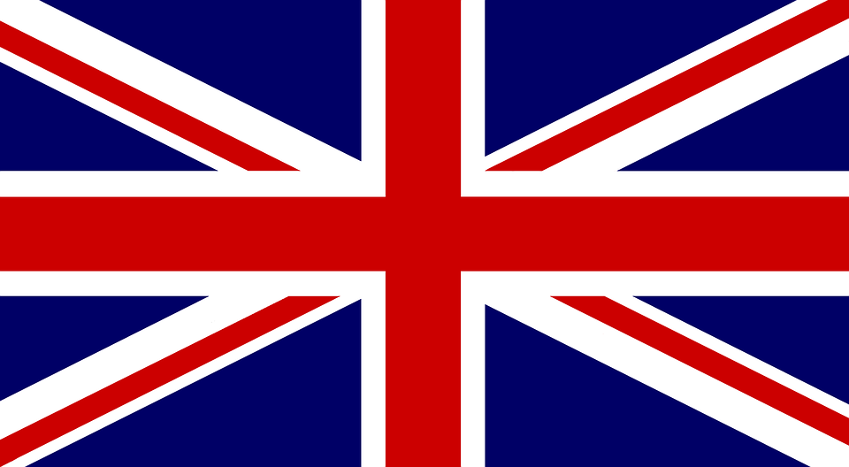

Brief history about United Kingdom
<<<<<<< HEAD <<<<<<< HEAD The United Kingdom, also known as Britain or the United Kingdom of Great Britain and Northern Ireland, is a European region with a long and storied history. The first modern humans (Homo sapiens) arrived in the region during the Ice Age (about 35,000 to 10,000 years ago), when the sea levels were lower and Britain was connected to the European mainland. It is these people who built the ancient megalithic monuments of Stonehenge and Avebury. Between 1,500 and 500 BCE, Celtic tribes migrated from Central Europe and France to Britain and mixed with the indigenous inhabitants, creating a new culture slightly distinct from the Continental Celtic one. This came to be known as the Bronze Age.
The Romans controlled most of present-day England and Wales, and founded a large number of cities that still exist today. London, York, St Albans, Bath, Exeter, Lincoln, Leicester, Worcester, Gloucester, Chichester, Winchester, Colchester, Manchester, Chester, and Lancaster were all Roman towns, as were all the cities with names now ending in -chester, -cester or -caster, which derive from the Latin word castrum, meaning "fortification.”
Information taken from http://www.studycountry.com/guide/GB-history.htm
You can read more here
======= ======= >>>>>>> 919c29a04ed5186ce86e649fa258216fe0a04b13
The United Kingdom, also known as Britain or the United Kingdom of Great Britain and Northern Ireland, is a European region with a long and storied history. The first modern humans (Homo sapiens) arrived in the region during the Ice Age (about 35,000 to 10,000 years ago), when the sea levels were lower and Britain was connected to the European mainland. It is these people who built the ancient megalithic monuments of Stonehenge and Avebury.
Between 1,500 and 500 BCE, Celtic tribes migrated from Central Europe and France to Britain and mixed with the indigenous inhabitants, creating a new culture slightly distinct from the Continental Celtic one. This came to be known as the Bronze Age.
The Romans controlled most of present-day England and Wales, and founded a large number of cities that still exist today. London, York, St Albans, Bath, Exeter, Lincoln, Leicester, Worcester, Gloucester, Chichester, Winchester, Colchester, Manchester, Chester, and Lancaster were all Roman towns, as were all the cities with names now ending in -chester, -cester or -caster, which derive from the Latin word castrum, meaning "fortification.”
Information taken from http://www.studycountry.com/guide/GB-history.htm
You can read more here